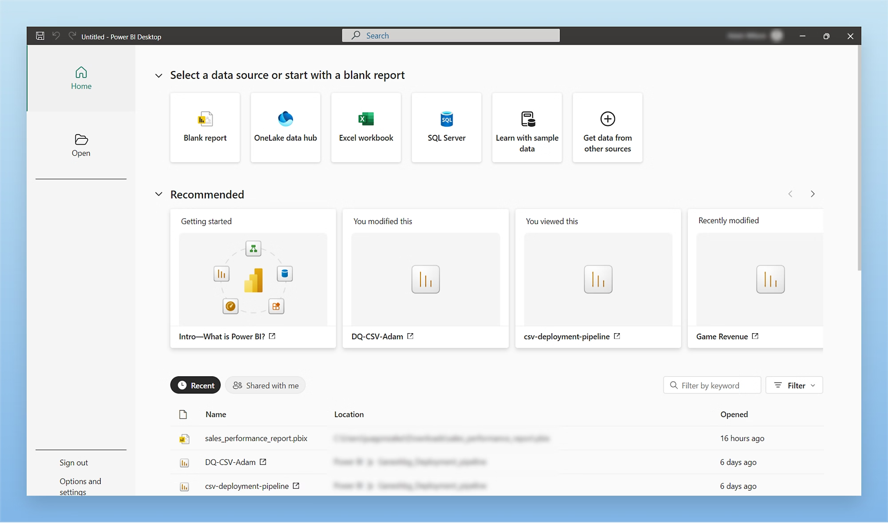
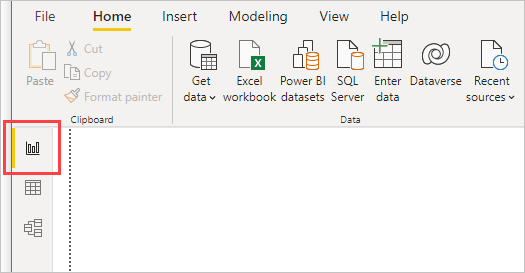
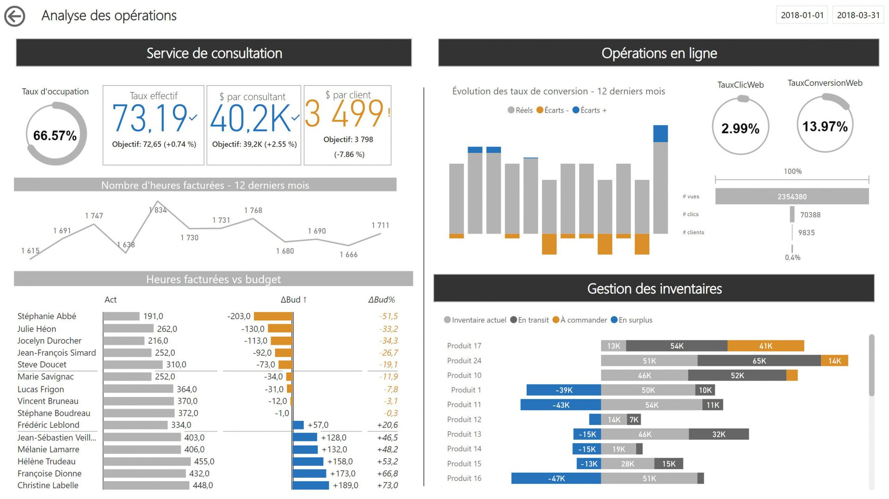
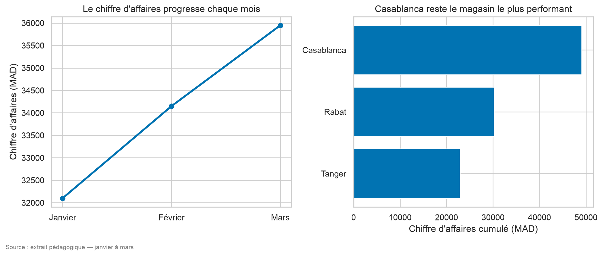

À la fin de ce chapitre, l’étudiant sera capable de :
Définir la Business Intelligence et distinguer un indicateur, un rapport et un tableau de bord ;
Construire mentalement le parcours d’une donnée depuis la source jusqu’à une décision ;
Importer et préparer des données dans Power BI avec Power Query ;
Comprendre un modèle en étoile dans Power BI et créer des mesures en DAX, y compris des comparaisons dans le temps ;
Choisir entre Power BI et une application Python avec Taipy selon le besoin ;
Construire une application Taipy fonctionnelle intégrant une visualisation Python soignée ;
Expliquer les principes d’un tableau de bord lisible : objectif, public, filtres, contexte et action.
La Business Intelligence (BI) transforme des données préparées — celles de l’entrepôt du chapitre précédent — en informations régulièrement consultées pour piloter une activité. Elle ne consiste pas à accumuler des graphiques : un bon tableau de bord aide une personne précise à répondre à des questions précises et à décider.
1. Comprendre la BI
1.1. Du besoin à l’indicateur
Un indicateur est une mesure définie par une formule, une période et une population. Un KPI (Key Performance Indicator) est un indicateur considéré comme essentiel pour suivre un objectif.
Exemple pour un site de livraison :
Table 1: De l’objectif métier au KPI
Élément
Exemple
Objectif
Livrer les commandes à temps
KPI
Taux de livraison à temps
Formule
livraisons à temps / livraisons terminées
Période
semaine ou mois
Cible
au moins 95 %
Action possible
examiner les villes sous la cible
Un rapport peut contenir plusieurs pages et des analyses détaillées, destinées à être explorées. Un tableau de bord est généralement plus synthétique : il met en évidence les quelques indicateurs et alertes nécessaires au suivi régulier d’une activité, souvent en une seule page consultée chaque jour ou chaque semaine.
Table 2: Trois livrables BI, trois usages différents
Livrable
Fréquence de consultation
Profondeur
Exemple
Tableau de bord
Quotidienne ou hebdomadaire
Quelques KPI clés
Suivi des ventes du jour
Rapport
Ponctuelle ou mensuelle
Plusieurs pages, détail
Bilan trimestriel des ventes
Analyse ad hoc
Une seule fois
Ciblée sur une question précise
Pourquoi les ventes ont-elles chuté en mars ?
1.2. Le parcours d’une solution BI
Sources → préparation → modèle sémantique → mesures → visuels
↓
rapport / tableau de bord
↓
décision et action
Ce parcours reprend directement les briques des deux chapitres précédents : les sources (chapitre 1), le modèle sémantique qui s’appuie sur le modèle en étoile (chapitre 4), et les visuels qui suivent les principes de choix de graphique du chapitre 3.
Le modèle sémantique donne un sens commun aux tables, aux relations et aux mesures. Deux personnes doivent obtenir le même chiffre lorsqu’elles utilisent le même KPI — c’est tout l’enjeu du dictionnaire métier présenté au chapitre précédent.
1.3. Règles d’un tableau de bord débutant
Un tableau de bord lisible :
commence par le public et la décision attendue ;
affiche une période et une unité ;
présente quelques KPI importants avant les détails ;
utilise une couleur pour signaler une information, pas pour décorer chaque objet — voir les principes d’accessibilité du chapitre 3 ;
permet d’explorer sans cacher la définition des indicateurs ;
indique la date de dernière actualisation.
2. Power BI : une démarche structurée
Power BI est une plateforme de Business Intelligence qui permet de connecter des sources, de les transformer, de créer un modèle de données, de calculer des mesures et de construire des rapports interactifs. Le parcours présenté ici commence dans Power BI Desktop (application gratuite pour Windows) ; le partage dépend ensuite de l’environnement et des droits de l’organisation, via le Power BI Service.
2.1. Étape 1 — Importer les sources
Le bouton Obtenir les données (Get Data) de Power BI Desktop donne accès à une longue liste de connecteurs : fichiers (CSV, Excel, Parquet, JSON), bases de données (SQL Server, PostgreSQL, MySQL), services cloud, API web, et bien d’autres — les mêmes familles de sources que celles présentées au chapitre 1.

Figure 1: Écran « Obtenir les données » de Power BI Desktop, avec la liste des connecteurs disponibles (fichiers, bases de données, services en ligne)
À l’import, il faut vérifier :
les noms de colonnes et leurs types ;
le séparateur et l’encodage d’un CSV ;
le type date, nombre ou texte ;
le nombre de lignes et la période couverte ;
la présence de doublons et de valeurs manquantes.
Importer n’est pas encore analyser : il faut comprendre ce qui a été chargé, exactement comme lors de la première lecture d’un jeu de données présentée au chapitre 1.
ImportantZoom sur les tendances : mode Import ou DirectQuery ?
Power BI propose deux modes de connexion. En mode Import (le plus courant, et celui utilisé dans ce chapitre), les données sont copiées et stockées dans le fichier Power BI, ce qui offre les meilleures performances mais nécessite une actualisation régulière. En mode DirectQuery, Power BI interroge la source à chaque affichage, sans copier les données : les résultats sont toujours à jour, au prix de performances qui dépendent directement de la source interrogée. Un mode hybride, appelé composite, permet de mélanger les deux selon les tables.
2.2. Étape 2 — Transformer avec Power Query
Power Query sert à préparer les données avant leur utilisation dans le modèle — c’est l’équivalent visuel des étapes de nettoyage et de transformation vues au chapitre 1 (valeurs manquantes, doublons, encodage, types). On peut supprimer des colonnes inutiles, renommer un champ, convertir un type, filtrer des lignes, remplacer une valeur, fusionner des tables ou ajouter une colonne calculée.

Figure 2: L’éditeur Power Query, avec la liste des étapes de transformation appliquées dans le panneau de droite
Une transformation doit rester explicable et reproductible. Power Query conserve les étapes appliquées dans un panneau dédié (« Étapes appliquées ») ; il vaut mieux créer plusieurs étapes nommées et simples qu’une modification manuelle impossible à refaire. En coulisses, chaque étape est écrite dans le langage M, que l’on peut lire et modifier directement pour les transformations les plus avancées.
Exemples de contrôles à effectuer avant de quitter Power Query :
Montant est numérique et positif ;
DateCommande est bien de type date ;
ProduitID et DateID sont présents ;
la catégorie vide est traitée explicitement ;
le nombre de lignes final est comparé au nombre attendu.
AstuceBonne pratique
Nommez vos étapes Power Query de façon explicite (« Filtrer lignes annulées » plutôt que « Étape 7 »). Un collègue — ou vous-même dans six mois — doit pouvoir comprendre le raisonnement sans exécuter le fichier.
2.3. Étape 3 — Construire le modèle
Pour un modèle de ventes, on privilégie un schéma en étoile — exactement celui présenté au chapitre 4 :
Figure 3: Vue « Modèle » de Power BI Desktop, montrant les relations entre la table de faits et les tables de dimensions
La table de faits contient les lignes de vente et les dimensions permettent de filtrer par date, produit, client ou magasin. Les relations doivent être vérifiées : une dimension possède généralement une ligne par identifiant (cardinalité un), et plusieurs lignes de faits peuvent lui être liées (cardinalité plusieurs) — on parle de relation « un-à-plusieurs » (1:). Le sens du filtre (cross-filter direction*) détermine si un filtre appliqué sur la dimension se répercute sur la table de faits (le cas normal), ou aussi dans l’autre sens.
AvertissementLe piège des relations ambiguës
Si une dimension contient plusieurs lignes pour le même identifiant, ou si deux tables sont reliées de manière inattendue, les totaux peuvent être multipliés. Vérifiez toujours le grain, les clés et un total connu avant de publier un rapport — la même précaution que pour l’exercice de vérification du chapitre 4.
2.4. Étape 4 — Créer des mesures en DAX
DAX (Data Analysis Expressions) est le langage de formules utilisé dans les modèles Power BI. Une mesure est recalculée dynamiquement selon le contexte de filtre du visuel, de la page ou de l’utilisateur — c’est ce qui la distingue fondamentalement d’une colonne calculée, qui est évaluée une seule fois, ligne par ligne, au chargement des données.
Aller plus loin : CALCULATE et l’intelligence temporelle
La fonction CALCULATE modifie le contexte de filtre d’une mesure, ce qui permet des comparaisons dans le temps très fréquentes dans un tableau de bord :
Ce type de comparaison — utile pour répondre à « comment se comportent nos ventes par rapport à l’an dernier ? » — nécessite une dimension Date complète et marquée comme table de dates dans le modèle, condition indispensable au bon fonctionnement des fonctions d’intelligence temporelle.
Table 4: Quelques fonctions DAX fréquemment utilisées
Fonction DAX
Rôle
SUM, AVERAGE, COUNT
Agrégations de base
DISTINCTCOUNT
Compte les valeurs distinctes (ex. commandes uniques)
DIVIDE
Division sécurisée (gère le zéro)
CALCULATE
Modifie le contexte de filtre d’une mesure
SAMEPERIODLASTYEAR, DATEADD
Comparaisons dans le temps
FILTER
Filtre une table selon une condition
Pour débuter, il faut surtout retenir la distinction entre mesure et colonne calculée, et le rôle protecteur de DIVIDE. Dans un premier tableau de bord, trois ou quatre mesures bien définies valent mieux que de nombreuses formules difficiles à expliquer.
2.5. Étape 5 — Construire les visuels
Pour une page de suivi des ventes, une composition simple peut suivre les principes du chapitre 3 :
une ligne de cartes KPI : chiffre d’affaires, commandes, panier moyen, taux de livraison à temps ;
une courbe du chiffre d’affaires par mois (évolution, chapitre 3 §4.5) ;
un graphique en barres par région ou catégorie (comparaison, §4.2) ;
un tableau ou une matrice détaillé et filtrable ;
des segments (slicers) pour l’année, la région et la catégorie.

Figure 5: Page de rapport Power BI combinant cartes KPI, courbe d’évolution, barres par catégorie et segments de filtre
Chaque visuel doit répondre à une question. Un graphique avec trop de séries ou trop de couleurs devient difficile à lire — le même principe de sobriété que celui du data storytelling présenté au chapitre 3.
ImportantZoom sur les tendances : l’IA dans Power BI
Les versions récentes de Power BI intègrent des fonctionnalités d’intelligence artificielle : le module Q&A permet d’interroger les données en langage naturel (« quel est le chiffre d’affaires de mars à Casablanca ? »), les visuels de décomposition (decomposition tree) explorent automatiquement quelles catégories expliquent le plus une variation, et Copilot pour Power BI peut générer une première ébauche de rapport ou résumer les tendances observées. Ces outils accélèrent l’exploration, mais ne dispensent jamais de vérifier la définition exacte des mesures affichées.
2.6. Étape 6 — Vérifier et partager
Avant tout partage, vérifiez les totaux sur un petit exemple connu, la date d’actualisation, les filtres, les titres et les droits d’accès.
Le partage s’effectue en publiant le rapport dans un espace de travail (workspace) du Power BI Service, où il peut être organisé en application, actualisé automatiquement selon une planification, et consulté depuis un navigateur ou l’application mobile. Pour restreindre l’accès aux données selon le profil de l’utilisateur (par exemple, un directeur régional ne voit que sa région), Power BI propose la sécurité au niveau des lignes (Row-Level Security, RLS), déjà annoncée comme principe de gouvernance au chapitre 4.
Un rapport partagé avec des données personnelles doit respecter les règles de l’organisation et le principe du moindre accès.
3. Taipy : créer une application BI en Python
Taipy permet de construire des applications Python interactives avec des contrôles, des graphiques, des tableaux et des filtres. Il est particulièrement intéressant quand l’équipe veut intégrer l’analyse dans une application métier ou conserver une logique Python personnalisée, en s’appuyant sur les bibliothèques de visualisation déjà vues au chapitre 3.
3.1. Quand choisir Taipy ?
Taipy peut être pertinent lorsque :
les traitements sont déjà écrits en Python ;
l’application doit combiner un tableau de bord avec une logique métier ;
l’on veut contrôler l’interface et le déploiement comme un projet logiciel ;
l’utilisateur doit modifier un paramètre et observer immédiatement un résultat.
Power BI peut être plus adapté lorsqu’une organisation veut une solution de BI prête à l’emploi, un catalogue de rapports, des connexions gérées et des usages majoritairement orientés vers l’exploration métier.
Ce ne sont pas des outils absolument opposés. Une équipe peut préparer les données avec Python, les exposer dans Power BI, ou intégrer un indicateur Power BI dans un parcours applicatif selon son architecture.
3.2. Anatomie d’une application Taipy
Taipy s’organise autour de deux briques complémentaires :
Table 5: Les deux briques de Taipy
Brique
Rôle
Taipy GUI
Construit l’interface : pages, contrôles (sélecteurs, tableaux, graphiques), mise en page
Taipy Core
Orchestre les traitements : données, tâches, scénarios reproductibles — utile pour des pipelines plus complexes
Pour un tableau de bord simple comme celui de ce chapitre, Taipy GUI suffit largement ; Taipy Core devient utile lorsque l’application doit orchestrer plusieurs traitements enchaînés (par exemple, un pipeline de préparation suivi d’un calcul de prévision).
3.3. Préparer les données et calculer les indicateurs
Contrairement au reste de ce chapitre, les cellules de code qui suivent sont réellement exécutées lors de la génération de ce livre : les données, les indicateurs et le graphique que vous voyez ci-dessous sont calculés en direct par Python, exactement comme le ferait l’application Taipy finale.
Cette table ventes, volontairement compacte, joue ici le rôle de la table de faits déjà préparée par l’entrepôt de données du chapitre 4. Dans une application réelle, elle proviendrait d’un fichier, d’une base de données ou d’une API, préparée avec les techniques du chapitre 1.
3.4. Construire une visualisation sophistiquée avec Python
L’application Taipy affichera le graphique produit ici, construit en appliquant directement les bonnes pratiques du chapitre 3 : deux graphiques complémentaires (évolution et comparaison), une palette accessible, des titres-messages et une source.
Code
import matplotlib.pyplot as pltimport seaborn as snssns.set_theme(style="whitegrid")sns.set_palette("colorblind")fig, axes = plt.subplots(1, 2, figsize=(11, 4.5))# Panneau 1 : évolution du chiffre d'affaires total par moisevolution = ventes.groupby("mois", sort=False)["chiffre_affaires"].sum()axes[0].plot(evolution.index, evolution.values, marker="o", linewidth=2.5)axes[0].set_title("Le chiffre d'affaires progresse chaque mois")axes[0].set_ylabel("Chiffre d'affaires (MAD)")axes[0].set_xlabel("")# Panneau 2 : comparaison par magasin, triéepar_magasin = ventes.groupby("magasin")["chiffre_affaires"].sum().sort_values()axes[1].barh(par_magasin.index, par_magasin.values)axes[1].set_title("Casablanca reste le magasin le plus performant")axes[1].set_xlabel("Chiffre d'affaires cumulé (MAD)")fig.text(0.01, -0.02, "Source : extrait pédagogique — janvier à mars", fontsize=8, color="gray")plt.tight_layout()plt.show()

NotePourquoi cette cellule s’exécute-t-elle alors que le reste de ce chapitre ne s’exécute pas ?
Les extraits Power BI et DAX de ce chapitre décrivent une interface graphique et un langage propres à Power BI, qu’un livre Quarto ne peut pas exécuter. À l’inverse, la préparation des données et la construction du graphique ci-dessus sont écrites en Python : elles s’exécutent réellement au moment de la génération du livre (execute: freeze: auto dans _quarto.yml), exactement comme elles s’exécuteraient à l’intérieur d’une application Taipy.
3.5. Assembler l’application Taipy
Le code suivant montre comment ce même graphique et ces mêmes indicateurs seraient intégrés dans une page Taipy interactive, avec un sélecteur de magasin. Ce bloc n’est pas exécuté dans le livre : Gui(page).run() démarre un serveur web local qui reste actif en attendant les interactions de l’utilisateur, ce qui bloquerait indéfiniment la génération de ce livre. Pour le voir fonctionner, copiez ce code dans un fichier app.py et exécutez-le vous-même avec uv run app.py.
Dans cet exemple, ventes contient les données affichées, page décrit l’interface en langage Taipy Markdown, et le sélecteur déclenche construire_figure à chaque changement de magasin. Dans un vrai projet, on ajoute des indicateurs calculés (chiffre d’affaires, panier moyen) affichés sous forme de cartes, en réutilisant directement les fonctions de préparation vues en section 3.3. Les noms exacts de certains contrôles peuvent évoluer selon la version de Taipy : il faut vérifier la documentation de la version utilisée.
3.6. Organiser une petite application
Même une application pédagogique gagne à séparer les responsabilités, à l’image de la séparation ETL vue au chapitre 4 :
projet/
├── data/ # données sources ou exemple
├── preparation.py # lecture et nettoyage (chapitre 1)
├── indicateurs.py # calculs métier (chapitre 2 et 4)
├── visualisations.py # graphiques matplotlib/seaborn (chapitre 3)
├── app.py # interface Taipy
└── README.md # installation et utilisation
Cette séparation permet de tester les indicateurs indépendamment de l’interface. L’application ne doit pas recalculer silencieusement un indicateur avec une définition différente de celle du rapport Power BI — le dictionnaire métier du chapitre 4 doit rester la référence commune aux deux outils.
4. Comparaison synthétique
Table 6: Power BI et Taipy, deux approches complémentaires de la BI
Critère
Power BI
Taipy
Profil
Plateforme BI avec interface graphique
Bibliothèque/applications Python
Préparation
Power Query et connexions
Python, pandas ou autres outils
Mesures
DAX et modèle sémantique
Fonctions et code Python
Visualisation
Visuels intégrés (cartes, courbes, barres…)
matplotlib/seaborn/Plotly, comme au chapitre 3
Usage principal
Rapports, exploration et partage BI
Application interactive intégrée à un projet
Licence et coût
Gratuit pour Desktop ; licence pour le partage en Service
Open source (bibliothèque Python)
Courbe d’apprentissage
Interface visuelle, langage DAX à apprendre
Nécessite de savoir programmer en Python
Point d’attention
Relations, contexte des mesures, droits
Organisation du code, déploiement, versions
Le choix doit partir du besoin, pas de la préférence pour un outil. Dans les deux cas, les mêmes bases restent indispensables : question métier, qualité des données (chapitre 1), modèle clair (chapitre 4), indicateurs documentés et visualisation lisible (chapitre 3).
Exercices
NoteConsigne
Ces exercices sont conceptuels ou demandent seulement un calcul court. Aucun logiciel n’est nécessaire, sauf mention contraire.
Exercice 1 (Indicateur ou action ?) Pour l’objectif « réduire les retards de livraison », proposez un KPI, sa formule et une action possible si sa valeur diminue.
Exercice 2 (Lire un parcours BI) Associez chaque étape à son rôle : préparer, modéliser, visualiser, décider.
Relier les ventes à la dimension Date.
Convertir une colonne texte en date.
Afficher les ventes par mois.
Renforcer un transporteur après avoir constaté des retards.
Exercice 3 (Calculer un KPI) Sur 250 livraisons terminées, 225 ont été livrées à temps. Calculez le taux de livraison à temps et indiquez s’il atteint une cible de 95 %.
Exercice 4 (Power Query ou DAX ?) Indiquez l’outil le plus adapté :
Corriger le type d’une colonne Date.
Calculer le chiffre d’affaires selon les filtres du rapport.
Supprimer une colonne inutilisée avant le modèle.
Comparer le chiffre d’affaires à celui de l’année précédente.
Exercice 5 (Vérifier une relation) Une dimension Produit contient deux lignes pour le même ProduitID. Quel risque cela crée-t-il lorsqu’on relie cette dimension à une table de ventes ? Quelle vérification simple proposeriez-vous ?
Exercice 6 (Choisir un outil) Une équipe possède déjà plusieurs fonctions Python et veut intégrer un indicateur interactif dans une application interne. Une autre équipe veut surtout créer rapidement des rapports métiers partagés. Quel outil recommander à chacune, et pourquoi ?
Exercice 7 (Lire une mesure) Le chiffre d’affaires est de 48 000 MAD pour 300 commandes.
Calculez le panier moyen.
Pourquoi faut-il utiliser le nombre de commandes et non le nombre de lignes de produits si le KPI est défini par commande ?
Exercice 8 (Critiquer une page) Une page affiche 25 graphiques sans unité, sans date de mise à jour et avec une couleur différente pour chaque barre. Citez trois améliorations prioritaires et justifiez-les.
Exercice 9 (Mesure ou colonne calculée ?) Pour chacun des besoins suivants, indiquez s’il s’agit plutôt d’une mesure ou d’une colonne calculée (Table 3) :
Calculer, pour chaque ligne de vente, la marge unitaire (Prix - Coût).
Calculer le chiffre d’affaires total affiché sur une carte, qui doit changer selon le mois sélectionné.
Exercice 10 (Choisir la visualisation Taipy) En reprenant les données de la section 3.3 (ventes, avec les colonnes mois, magasin, chiffre_affaires), quel type de graphique du chapitre 3 utiliseriez-vous pour répondre à chacune des questions suivantes, et pourquoi ?
Comment le chiffre d’affaires évolue-t-il entre janvier et mars ?
Quel magasin contribue le plus au chiffre d’affaires total ?